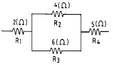

표면처리산업기사 (2003-05-25 기출문제)
1과목: 금속재료 및 재료시험
1. 순철의 동소변태로 약1400℃에서 γ-Fe ⇄ δ -Fe 의 변태는?
- A1
- A2
- A3
- A4
(정답률: 알수없음)

2. 한개의 결정핵이 발달하여 나무가지 모양을 이룬 것은?
- 편상세포
- 수지상정
- 과냉
- 고스트라인
(정답률: 70%)
3. 탄소강의 화학성분 중 탄소의 양을 간편하게 판별하는 방법은?
- 비중시험법
- 방사선동위원소검사법
- 불꽃시험법
- 설퍼프린트
(정답률: 90%)
4. 광학 금속 현미경 조직 시험에 해당 되지 않는 것은?
- 고온
- 편광
- 스키머
- 위상차
(정답률: 46%)
5. 충격시험에 관한 설명이 잘못된 것은?
- 금속이 소성변형을 일으키지 않고 파괴되는 성질을 취성이라고 한다.
- 인성 이란 소성 구역에서 재료가 파괴할 때까지 에너지를 흡수 가능한 능력이라고 한다.
- 충격값의 단위로 샤르피시험에서 kgf·m/cm2이다.
- 시험편 온도가 저하할수록 충격값이 상승한다.
(정답률: 55%)
6. 쇼어 경도 시험시 안전 및 유의 사항이 아닌 것은?
- 시험은 안정된 위치에서 실시해야 한다.
- 시험편에 기름 등이 묻지 않도록 해야한다.
- 고무와 같은 탄성율의 차이가 큰 재료에 적당하다.
- 시험기의 수평이 잘 맞아야 한다.
(정답률: 90%)
7. 종축에 반복응력(S),횡측에 응력반복수(N)를 취해 측정하는 시험은?
- 피로시험
- 크리프시험
- 마모시험
- 충격시험
(정답률: 알수없음)
8. 0.2% 탄소강의 상온에서 초석 페라이트의 량은?(공석점의 탄소 함량은 0.8%임)
- 25%
- 35%
- 65%
- 75%
(정답률: 30%)
9. 서밋(cermet)합금의 용도로 관련이 가장 적은 것은?
- 밸브넛트
- 절삭용 공구
- 착암기의 드릴끝
- 내열재료
(정답률: 70%)
10. 인장시험에서 얻은 결과의 연신율로써 재료의 어떤 성질의 양을 파악할 수 있는가?
- 연성
- 응력성
- 압축성
- 비틀림성
(정답률: 알수없음)
11. 지하철 전동차의 브레이크 마모상태나 베어링 등의 마찰상태를 시험하기 위해서 이용하는 마모시험 방법은?
- 슬라이딩 마모
- 반전 마모
- 스텝 마모
- 스프링 마모
(정답률: 73%)
12. 주물의 내부 결함을 검출하는데 이용되는 시험은?
- 피로시험
- X-선 투과 검사법
- 인장시험
- 충격시험
(정답률: 92%)
13. 전위(dislocation)의 종류에 속하지 않는 것은?
- 나사전위
- 칼날전위
- 절단전위
- 혼합전위
(정답률: 알수없음)
14. 열간가공과 냉간가공의 한계는?
- 재결정온도
- 연성온도
- 소성가공온도
- 용융점
(정답률: 알수없음)
15. 기능재료에서 처음 주어진 특정한 모양의 것을 인장하여 소성변형한 것을 가열에 의하여 원형으로 돌아가는 현상은?
- 초탄성
- 소성변형 현상
- 형상기억 효과
- 피에조(piezo)현상
(정답률: 90%)
16. 중금속(비중:약 7.1)으로 용융점이 약 420℃ 인 것은?
- 알루미늄
- 마그네슘
- 아연
- 베리륨
(정답률: 알수없음)
17. 양은 이라고도 하며 Ni을 함유하는 황동은?
- 포금
- 보론
- 양백
- 칼렛
(정답률: 90%)
18. 회주철재의 인장시험을 하기 위해 평행부 지름 20mm,표점거리 50mm,평행부 길이 80mm로 시험편을 가공하였을 때 인장응력의 최대값이 7000kgf이었다면 이 재료의 인장 강도(kgf/mm2)는약 얼마인가?
- 89.2
- 48.6
- 22.3
- 3.57
(정답률: 알수없음)
19. 밀폐된 용기의 누설검사로써 검사할 부분을 용액중에 담근 후 공기, 질소 또는 헬륨가스 등을 통과시켜 누설 부위에서 기포가 나타나게하여 검사하는 방법은?
- 버블법
- 자기포화법
- 습식현상법
- 설퍼프린트법
(정답률: 알수없음)
20. 크롬(Cr)계 스테인리스강의 취성의 종류로 구분할 수 없는 것은?
- 475℃ 취성
- 저온취성
- 고온취성
- 불꽃취성
(정답률: 알수없음)
2과목: 표면처리
21. 내식(耐蝕)시험으로 쓰이지 않는 방법은?
- 유공도시험(pin hole test)
- 염수분무시험(salt spray test)
- 코로드코오트시험(corrodkote test)
- 내부응력시험(stress test)
(정답률: 알수없음)
22. 도금에서 핀홀(pin hole)이 생기는 주 원인이 아닌 것은?
- 유기 불순물
- 고형 물질
- 소지의 결함
- 콜로이드 상태의 부유물
(정답률: 80%)
23. 밀착성 시험에 속하는 것은?
- 브리넬시험
- 코로드코트시험
- 염수분무시험
- 굴곡시험
(정답률: 알수없음)
24. 전기도금 과정중에 나타나는 양극의 부동태의 설명이 틀린 것은?
- 양극표면에 안정된 산화물층 형성
- 양극용해의 전류효율을 좋게 함
- 양극이 불용성 상태로 됨
- 도금액중의 금속이온 감소 초래
(정답률: 알수없음)
25. 도금탱크에서 양극(+극)전류효율이 음극(-극)전류효율보다 작을 때 장시간 도금을 하면 도금액중에 금속성분 농도는 어떻게 되겠는가?
- 변하지 않는다
- 점차 진하여진다.
- 점차 희박해진다.
- 어떻게 변할지 예측할수 없다.
(정답률: 알수없음)
26. 크롬 도금액 중의 철(Fe) 불순물을 분석 하는데 필요한 것이 아닌 것은?
- 과산화 나트륨
- 6N-염산
- 염화암모늄
- 0.1N-티오황산나트륨
(정답률: 알수없음)
27. 시안화구리 도금에 많이 쓰이고 있는 전기의 공급법은?
- PR법
- SC법
- LD법
- BF법
(정답률: 73%)
28. 금속침투법을 이용하여 아연피막을 얻을려고 하면 어떤 방법을 택하여야 하는가?
- 갈바나이징(galvanizing)
- 칼로라이징(calorizing)
- 세라다이징(sheradizing)
- 크로마이징(chromizing)
(정답률: 62%)
29. 적은 전류밀도로 부터 전류밀도를 증가하면서 금속을 석출시켰을 때 전류밀도의 크기에 따라 석출금속의 상태가 어떠한 상태로 되겠는가?
- 약간 거친 전착→ 모서리부 수지상 전착→ 미세 치밀 전착→ 스폰지 및 분말상 전착
- 미세 치밀 전착→ 스폰지 및 분말상 전착→ 모서리부 수지상 전착→ 약간 거친 전착
- 스폰지 및 분말상 전착→ 모서리부 수지상 전착→ 약간 거친 전착→ 미세 치밀 전착
- 약간 거친 전착→ 미세 치밀 전착→ 모서리부 수지상 전착→ 스폰지 및 분말상 전착
(정답률: 46%)
30. 도면과 같이 저항(抵抗)을 직렬과 병렬로 연결했을 때의 전저항(全抵抗)은?

- 7.1[Ω]
- 9.4[Ω]
- 12.4[Ω]
- 14.1[Ω]
(정답률: 알수없음)
31. 도금 전의 탈지나 수세 중에 생긴 엷은 산화막, 부동태막을 제거하고 도금의 밀착을 완전히 하기 위하여 산성염의 수용액으로 음극 전해를 하는 작업은?
- 활성화 처리
- 여과 처리
- 용해 처리
- 탕세 처리
(정답률: 59%)
32. 도금 피막의 경도(hardness)를 정량적으로 측정하고자 할 때 필요한 시험기기는?
- 마이크로 비커스 시험기
- 샤르피 시험기
- 크리프 시험기
- 피로 시험기
(정답률: 73%)
33. 플라스틱 성형품상의 도금 특징에 해당되지 않은 것은?
- 가볍고, 아름다운 금속적 외관을 얻을 수 있다.
- 내후성, 내열성, 강도성이 향상된다.
- 내식성이 있고 경제적이면서 디자인의 자유가 많다.
- 희망하는 장소에 전기전도성을 부여할 수 없다.
(정답률: 60%)
34. 알루미늄 양극산화법이 될 수 없는 것은?
- 수산법
- 크롬산법
- 염산법
- 황산법
(정답률: 알수없음)
35. Cu-Ni-Cr 도금을 하고자 할 때 구리 스트라이크를 하지 않아도 되는 금속소지는?
- 연강
- 청동
- 아연다이캐스트
- 고탄소강
(정답률: 알수없음)
36. 플라스틱 위에 도금한 제품의 시험방법에 속하지 않는 것은?
- 내식 시험
- 박리 시험
- 바블 시험
- 열사이클 시험
(정답률: 40%)
37. 산성아연도금의 배럴욕에 사용되는 주 성분액은?
- 수산화나트륨액
- 염화암모늄액
- 시안화칼슘액
- 질산은액
(정답률: 알수없음)
38. Ni 도금액 중에 붕산을 넣는 주 이유는?
- 불순물의 제거를 돕기 위해서
- 전도성을 높이기 위해서
- 철분의 해를 방지하기 위해서
- 도금액의 pH 변화를 완충하기 위해서
(정답률: 50%)
39. 철의 녹제거에 적합하지 않은 것은?
- 화학적 방법
- 기계적 방법
- 황산의 응고법
- 액체 호닝법
(정답률: 70%)
40. 금속용사법에서 가공면과 용사기(노즐의선단)와의 간격은 어느 금속을 가장 크게 하여야 하는가?
- 납
- 스테인리스
- 아연
- 알루미늄
(정답률: 알수없음)
3과목: 부식방식
41. 전기방식법에 관한 설명 중 틀린 것은?
- 외부전원법과 희생양극법이 있다.
- 희생양극법은 방식전류를 외부에서 조정할 수 있다.
- 유전양극법은 금속자체의 전위차를 이용한다.
- 외부전원법은 별도의 전원공급이 필요하다.
(정답률: 알수없음)
42. 전기 방식(음극 방식) 설계에서 토양 저항율의 계산식으로 맞는 것은? 단, 핀간격 a, 측정된 저항 R 임
- ρ =1/4·π·a·R
- ρ =1/2·π·a·R
- ρ =4·π·a·R
- ρ =2·π·a·R
(정답률: 알수없음)
43. 전식(Stray current corrosion)방지법으로 사용하는 방식법이 아닌 것은?
- 직접 배류법
- 간접 배류법
- 선택 배류법
- 강제 배류법
(정답률: 알수없음)
44. 내식 재료에 대한 설명 중 틀린 것은?
- 스테인리스, 티탄의 부동태 피막은 Cℓ-에 약하므로 해양 환경에서 내식성이 떨어진다.
- 철은 수중에서 내식성이 약하지만 환경 조건에 따라 부동태화 한다.
- 페라이트계 스테인리스에서 탄소뿐만 아니라 질소도 예민화의 원인이 된다.
- 알루미늄 및 알루미늄 합금은 내 알칼리성이 아주 우수 하다.
(정답률: 알수없음)
45. 부식의 가장 중요한 특징인 전기화학적 과정에서 요구 되어지는 사항 중 틀린 것은?
- 양극과 음극이 존재하여 전지(cell)를 형성해야 한다.
- 양극에서는 환원반응이 일어나야 한다.
- 액체가 전해액으로 작용해야 한다.
- 양극과 음극이 전기적으로 접촉해야 한다.
(정답률: 알수없음)
46. 내식성 시험법이 아닌 것은?
- 유공도시험
- 염수분무수험
- 코로드코트시험
- 내부응력시험
(정답률: 알수없음)
47. 환경 처리에 의한 방식 방법 중 적당하지 않은 것은?
- 대기 부식 방지를 위해 상대 습도를 임계 습도 이하로 낮춘다.
- 수중 부식 방지를 위해 용존 산소를 제거시킨다.
- 산소의 용해는 수온의 하강으로 감소되므로 냉각에 의한 기계적 탈기법도 있다.
- 부식 억제제 중 음극반응 억제제는 양극 반응을 억제 시키는 역할을 한다.
(정답률: 알수없음)
48. 금속의 결정입계에 있어서 국부전지가 구성되어 일어나는 부식 현상을 무슨 부식이라 하는가?
- 전해부식
- 입계부식
- 도금부식
- 전면부식
(정답률: 42%)
49. 금속의 해수부식 특성과 거리가 먼 것은?
- 일반탄소강의 해수중의 평균침식도는 0.25mm/y 정도이다.
- 니켈은 해수중의 부동태를 유지한다.
- 주철의 기지철이 부식되고 흑연만이 표면에 남는 것이 흑연화부식이다.
- 알루미늄의 침식도는 매우 높다.
(정답률: 알수없음)
50. Pourbaix의 전위-pH도에서 부식영역에 있는 철에 대한 설명 중 틀린 것은?
- 전위를 하강시키며 부식이 억제 된다.
- 전위를 높여서 부동태화 하면 부식이 억제된다.
- 온도를 상승시키면 부식이 억제된다.
- pH를 높여 알칼리화하면 부식이 억제된다.
(정답률: 46%)
51. 전해질 용액 중에서 금속을 양극산화함으로써 산화물피막을 형성시키는 방법은?
- 블루밍
- 아노다이징
- 본 딩
- 칼로라이징
(정답률: 알수없음)
52. 철 구조물의 방식에 있어서 고려하여야 할 사항이 아닌 것은?
- 도장이 용이해야 한다.
- 압연이 용이해야 한다.
- 수분제거가 용이해야 한다.
- 청소하기 쉬워야 한다.
(정답률: 알수없음)
53. 비파괴 검사에의한 부식진단 방법에서 초음파 탐상시험법에 관한 설명 중 틀린 것은?
- 수직법과 사각법으로 구분한다.
- 1~10 MHz의 초음파를 이용한다.
- 수직법은 결함측정,사각법은 두께측정에만 활용한다.
- 측정 정밀도 ±0.1mm 정도로 전면부식에 의한 두께 감소를 측정하는 수단으로 활용한다.
(정답률: 42%)
54. 길이 200m 이상 선박의 선저외판방식을 위한 유전양극 설치 위치로서 부적절한 곳은?
- Bilge Keel
- 선미부
- Rudder
- 선수부
(정답률: 37%)
55. 전기분해할 때 적용되는 패러데이(faraday) 법칙을 잘못 설명한 것은?
- 전극상에서 석출하는 화학물질의 양은 통과한 전기량에 비례한다.
- 전극상에서 용해하는 화학물질의 양은 통과한 시간에 반비례한다.
- 같은 전기량에 의해 석출하는 양은 그 물질의 화학당량에 비례한다.
- 1F (Farad) 는 26.8 Ah 이다.
(정답률: 알수없음)
56. 금속의 부식을 방지하는 방법이 아닌 것은?
- 대기중의 습기를 제거한다.
- 용액중의 산소를 제거한다.
- 온도를 높인다.
- 산성이나 염기성용액을 중성으로 유지시킨다.
(정답률: 55%)
57. 부식방지를 위한 장치의 설계와 조립 방법 중 틀린 것은?
- 절연재료(가스켓)를 사용하여 이종금속의 접촉을 막는다.
- 음극 면적에 대한 양극금속의 면적을 크게 한다.
- 플랜지 접합시는 가스켓을 프렌지보다 반드시 크게한다.
- 리벳, 볼트를 사용하는 것보다 용접이음을 실시한다.
(정답률: 43%)
58. 갈바니 음극(cathode) 방식 법에서 강재를 보호하기 위해 사용되는 양극(anode) 재료에 속하지 않는 것은?
- Mg
- Zn
- Cr
- Aℓ
(정답률: 알수없음)
59. 온도를 올렸을 때 산화가 가장 안되는 것은?
- 마그네슘
- 구리
- 나트륨
- 칼륨
(정답률: 알수없음)
60. 10m 이상의 깊은 토양중에서의 부식성 결정과 거리가 먼 것은?
- 산소의 농도
- 전기저항
- 혐기성박테리아
- 지하수
(정답률: 64%)